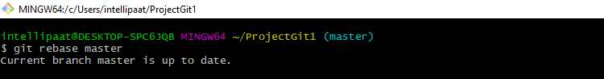

Git Commands
Git is a free, open-source distributed version control system tool designed to handle small to very large projects with speed and efficiency. It has steadily grown from just being a preferred skill to a must-have skill for multiple job roles today. Git has become an essential part of our everyday development process.
In this Git commands tutorial, let’s talk about the top 18 Git commands that are useful for working with Git.
Here are the top 18 Git commands list discussed in this tutorial:
- git init
- git add
- git commit
- git status
- git push
- git clone
- git branch
- git checkout
- git log
- git diff
- git merge
- git rebase
- git reset
- git pull
1. git init
Usage: git init [repository name]
We have to navigate to our project directory and type the command git init to initialize a Git repository for our local project folder. Git will create a hidden .git directory and use it for keeping its files organized in other subdirectories.

2. git add
Usage (i): git add [file(s) name]
This will add the specified file(s) into the Git repository, the staging area, where they are already being tracked by Git and now ready to be committed.
Usage (ii): git add . or git add *
This will take all our files into the Git repository, i.e., into the staging area.

We can use this command as git add -A as well.
Note : We will have to commit our files after we add them to the staging area.
3. git commit
Usage: git commit -m “message”
This command records or snapshots files permanently in the version history. All the files, which are there in the directory right now, are being saved in the Git file system.

4. git status
Usage: git status
This command will show the modified status of an existing file and the file addition status of a new file, if any, that has to be committed.

5. git push
Usage: git push origin [branch name]
Suppose, we have made some changes in the file and want to push the changes to our remote repository on a particular branch. By using the command ‘git push,’ the local repository’s files can be synced with the remote repository on Github.

6. git clone
Usage: git push origin [branch name]Usage: git clone [URL]
Suppose, we want to work on a file that is on a remote Github repository as another developer. How can we do that? We can work on this file by clicking on Clone or Download and copying the link and pasting it on the terminal with the git clone command. This will import the files of a project from the remote repository to our local system.

To create a local folder, we have to use the following command:
mkdir [directory- name]
cd [directory- name]
git clone [URL]
Now, paste the copied link along with the git clone command as shown below:

Note : Here, we don’t have to use the git remote add origin command because we have already cloned the remote repository in the local directory. Now, if we push any new file, it knows where it has to go.
7. git branch
Usage (i): git branch [name-of-the-branch]
When multiple developers are collaborating on a project or repository, branches become essential for managing different workspaces. Using this command, we can create a new branch (for example, ‘branch1’). This allows developers to work independently on their respective branches, making changes and commits without affecting the main branch or other branches.

Usage (ii): git branch -D [name-of-the-branch]
Likewise, to delete a branch, we utilize the “git branch -D” command. This enables us to remove a specific branch (e.g., ‘name-of-the-branch’) that is no longer needed, cleaning up the repository and reducing clutter.

8. git checkout
Usage (i): git checkout [name-of-the-new-branch]
This command allows us to switch to an existing branch within our repository. It facilitates navigating to the desired branch, enabling us to add new files, make changes, and commit those files within that specific branch.
Usage (ii): git checkout -b [name-of-the-new-branch]
This command serves a dual function. Firstly, it creates a new branch with the given name (for example, ‘branch2’). Secondly, it immediately switches our working environment to that newly created branch. This allows us to seamlessly begin working within the newly created branch, making it convenient to add files, make modifications, and commit changes exclusively within that branch.
9. git log
Usage (i): git log
The “git log” command is handy when we want to examine the detailed log of every commit in our repository. By executing this command, we can view the log specific to the branch we are currently in. Additionally, we can use “git log -3” to display the last three logs.
Usage (ii): git log –graph
For a visual representation of the commit history, we can utilize “git log –graph”. This option presents the commit-graph, showcasing the branching and merging of commits
Usage (iii): git log –graph –pretty=oneline
To further customize the output, we can use “git log –graph –pretty=oneline”. This format displays the commit graph along with a concise one-line description for each commit.
10. git diff
Usage: git diff [commit-id-of-version-x] [commit-id-of-version-y]
Diffing is a function that takes two input datasets and outputs the changes between them. The git diff command is a multi-use Git command which, when executed, runs a diff function on Git data sources. These data sources can be commits, branches, files, and more. The git diff command is often used along with the git status and git log commands to analyze the current state of our Git repository. We use git log to get the details of commit IDs.
Let’s compare the working directory with the index as shown below:
11. git merge
Usage: git merge [another-file-name]
This command will combine multiple sequences of commits into one unified history. In the most frequent use cases, git merge is used to combine two branches. The git merge command takes two commit pointers, usually the branch tips, and finds a common base commit between them. Once it finds a common base commit, it will create a commit sequence.
12. git rebase
Usage: git rebase [base]
Rebase is the process of moving and combining a sequence of commits to a new base commit. Rebasing is changing the base of our branch from one commit to another, making it appear as if we’ve created our branch from a different commit. Internally, Git accomplishes this by creating new commits and applying them to the specified base. It’s very important to understand that even though the branch looks the same, it is composed of entirely new commits.
The git rebase command performs an automatic git checkout before doing anything else. Otherwise, it remains on the current branch.

Consider a situation where we have branched off from the master and have created a feature branch, but the master branch is still having more commits. We want to get the updated version of the master branch in our feature branch, keeping our branch’s history clean, so that it appears as if we are working on the latest version of the master branch.
Note :
We don’t rebase public history. We should never rebase commits once they are pushed to a public repository. Why because the rebase would replace the old commits with the new ones, and it would appear that a part of our project history got abruptly vanished.
13. git reset
Usage: git reset –hard [SOME-COMMIT]
We use this command to return the entire working tree to the last committed state.
This will discard commits in a private branch or throw away the uncommitted changes!
Here, we have executed a ‘hard reset’ using the –hard option. Git displays the output indicating that the HEAD is pointing to the latest commit. Now, when we check the state of the repo with git status, Git will indicate that there are no pending changes (if any prior addition of a new file or modification of an existing file is done before using the ‘git reset –hard’ command). Our modifications to an existing file, if not committed, and the addition of a new file, if not staged, will be destroyed. It is critical to take note that this data loss cannot be undone.
If we do git reset –hard [SOME-COMMIT] then Git will:
Make our current branch (typically master) back to point "SOME-COMMIT"
Make the files in our working tree and the index (“staging area”) the same as the versions committed at "SOME-COMMIT"
14. git pull
Usage: git pull origin master
The git pull command first runs ‘git fetch’ which downloads the content from the specified remote repository and then immediately updates the local repo to match the content.